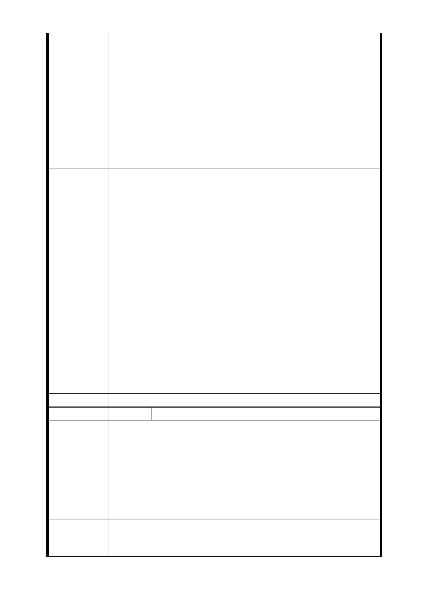

宅使用，何以厚此薄彼，容積獎勵有別呢？既皆屬捷運特
案變更，自應一體適用一致的容積率 720％、建蔽率 60 %
。
2. 都委會各位先進，如無法採納上開建議方案，自應要求臺
北市政府保證民眾最低限分配坪數，至少要達到「室內實
際使用坪數壹坪換壹坪、並加壹停車位」的最低標準，如
投資人無法達成，自應由市府補足未達標準差額，市府之
重大工程建設，自不應由居民去負擔建設費用。（停車位
的補償及拆遷租屋費用，亦應另案處理）。
3. 如仍未能蒙都委會各位先進採納，請各位先進督請捷運局
另覓合適地點，本社區請排除聯開計畫。
1.捷五用地範圍，係經本府捷運工程局就捷運設施需求、地
上建築物現況、土地開發大樓配置及財務可行性進行分析，
具開發效益所劃定範圍，縮減面積將造成未來開發大樓門
廳、地下停車場及建築配置不易，影響開發效益，進而影響
地主權益，且範圍面積縮小若無開發效益恐需以徵收方式辦
理，對地主權益影響更大，建議仍維持現有範圍，惟本府捷
運工程局將規劃捷五用地縮小面積之替代方案送請臺北市都
市計畫委員會專案小組審查。
市府回應
意見
2.有關土地開發區(捷)基地開發規模已考量未來都市發展予
以提高，經本府目前研析原則係以土地開發區（捷）基地，
依原建築容積(原容如低於法容以法容為準)+0.5倍法容+捷
運獎勵之原則辦理。惟仍應以「一坪換一坪」為上限（平均
值）。
3.103年9月16日第四次專案小組委員審查意見：LG03車站調
整車站位置改設於忠義國小，取消原車站位置捷五、捷六土
地開發區，使用忠義國小學校用地，並增設捷十土地開發區
（面積1199平方公尺）。
委員會決議 同編號交一－1 委員會決議。
編 號 捷五-2 陳情人 梁○章等 2 人
1.租金成本：從遷出至遷入期建造規劃期間愈長，地主所需
承擔的租金成本愈高。
2.坪數縮減，導致找補成本提高。
陳情理由
3.原有貸款之清償：大多住戶，尚有貸款問題仍待解決，故
住戶以取得之建物補償部分，去分擔租金成本、找補成本與
貸款清償，此對經濟不寬裕的家庭，實為經濟重擔。
4.原住戶租屋期間遷離臺北市，其北市相關之社福能否予以
維持。
簡而言之，降低地主所需承擔之成本暨不確定性，才能提升
建 議 辦 法 地主參與聯合開發的意願，故：
1. 降低地主租金支出：例如：協助辦理租金補貼，加強行政
- 53 -